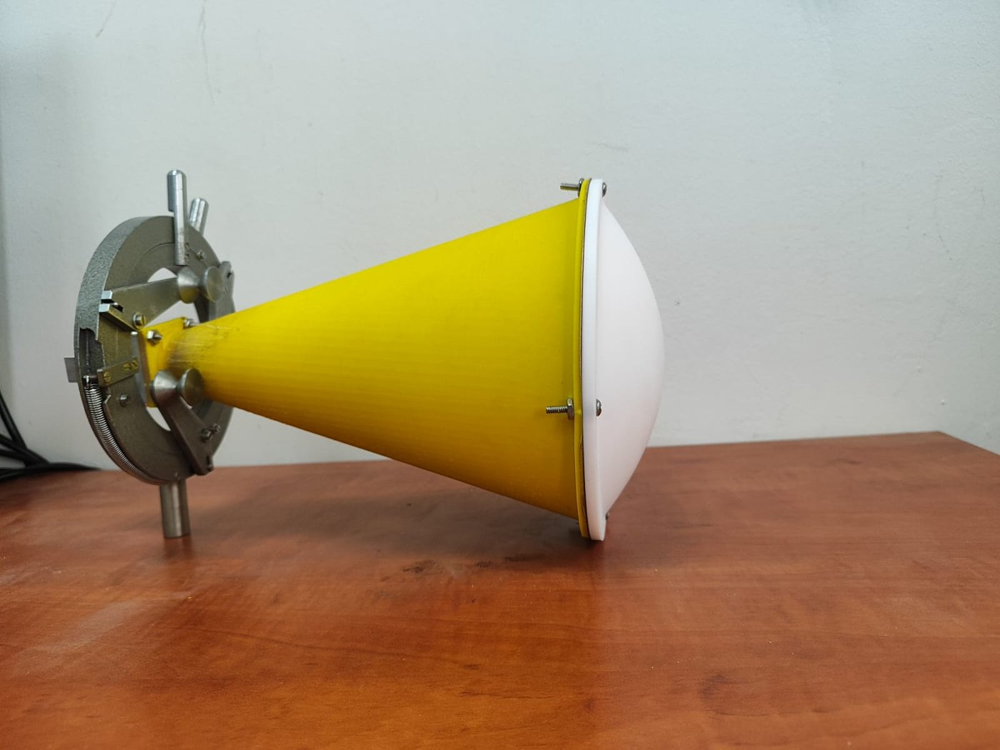
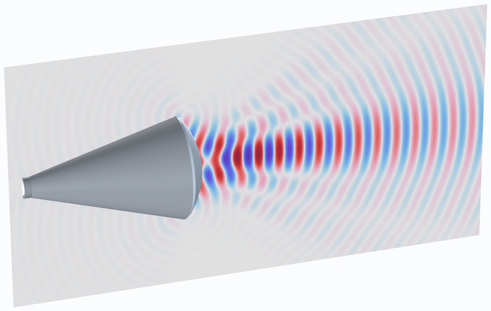
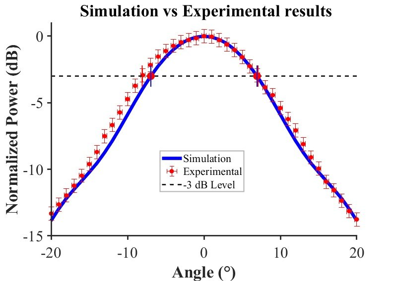
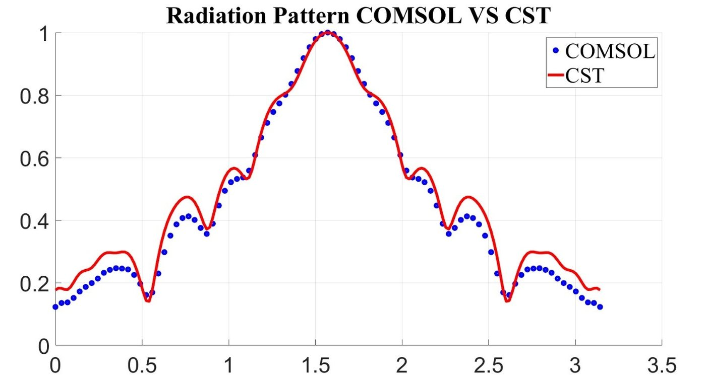
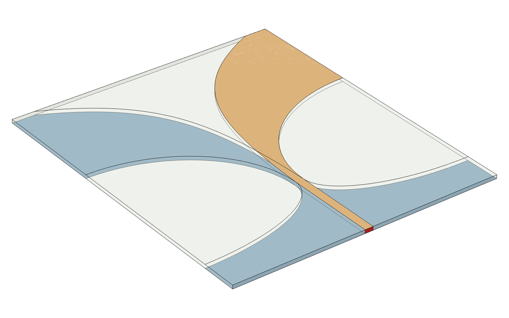
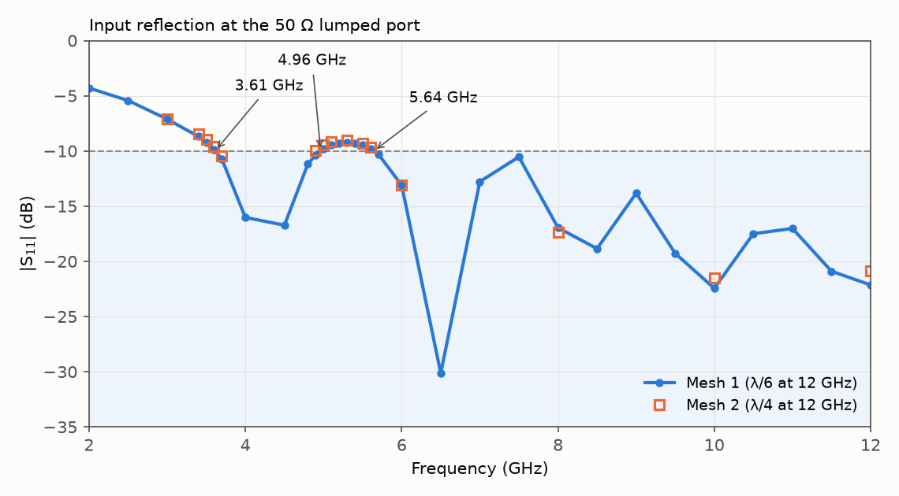
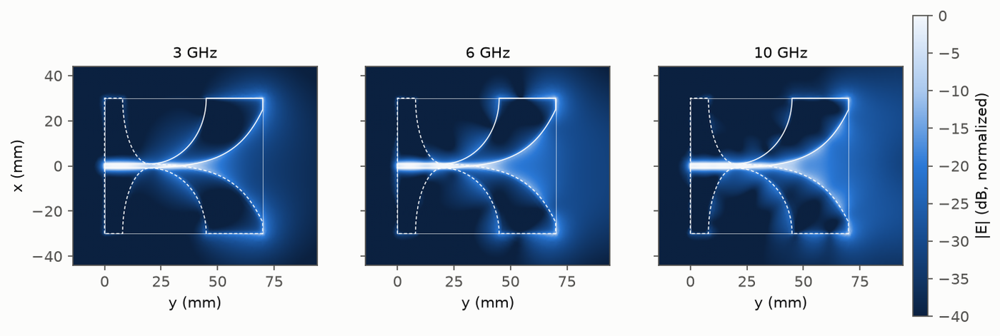
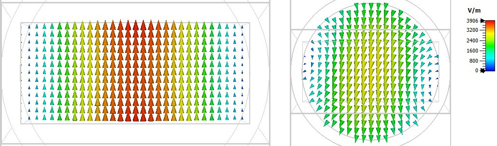

אנטנות · תדר רדיו ומיקרוגל
תכנון אנטנות וסימולציה אלקטרומגנטית
אני מתכנן אנטנות קרן, אנטנות רחבות סרט (UWB), רכיבים מקרינים לגלים מילימטריים וממירי אופנים בגלבו, ומנתח אותם בסימולציית גל־מלא ב‑COMSOL, CST ו‑HFSS. תכנונים נבחרים מאומתים במדידה במעבדה.
אנטנת קרן מודפסת עם עדשת מיקוד מ‑PTFE (10 גיגה־הרץ)
האלומה של אנטנת קרן קונית מתרחבת מרגע שהגל יוצא מהפתח. עדשה דו־קמורה מ‑PTFE בפתח הקרן הופכת את חזית הגל המתבדרת לחזית מתכנסת, וההספק מתרכז בכתם במרחק כ־100 מ״מ מעבר לפתח הקרן. הקרן הודפסה בהדפסת תלת־ממד וצופתה במתכת, והעדשה עובדה מ‑PTFE (פרמיטיביות יחסית 2.2).


במודל ההספק על הציר מגיע לשיא 101.5 מ״מ מעבר לפתח הקרן. רוחב הכתם בחצי הספק הוא כ־27 מ״מ (0.9 אורך גל), לעומת 138 מ״מ בקרן ללא עדשה באותו מרחק. גם במדידה ההספק על הציר מגיע לשיא כ־100 מ״מ מהפתח. המודל דו־ממדי וסימטרי סביב הציר, הדפנות בו מוליכות אידאליות והעדשה ללא הפסדים.


אנטנת ויוואלדי אנטיפודלית רחבת סרט (סימולציה, יעד תכנון 3 גיגה־הרץ)
אנטנת ויוואלדי היא חריץ שמתרחב בצורה מעריכית לכיוון הקצה הפתוח. כל תדר מוקרן מהאזור שבו רוחב החריץ הוא כחצי אורך גל, ולכן אנטנה אחת מכסה תחום תדרים רחב. בגרסה האנטיפודלית שתי הזרועות מודפסות משני צדי הלוח ומוזנות מקו מיקרוסטריפ דרך הארקה מתחדדת. התכנון בנוי על לוח Rogers RO4003C בגודל 60 × 70 מ״מ, עם פתח של 50 מ״מ, חצי אורך גל ב‑3 גיגה־הרץ.


בסימולציה |S11| נשאר ב־−10 dB או מתחת לו מכ־3.6 גיגה־הרץ ועד סוף הסריקה ב־12 גיגה־הרץ, למעט תחום צר סביב 5 גיגה־הרץ שבו הוא עולה לכ־−9 dB. התחום מתחיל 20% מעל 3 גיגה־הרץ שקובע רוחב הפתח. ההגבר הממומש בכיוון הקרינה הראשי הוא כ־8.3 עד 9.1 dBi בין 6 ל־11 גיגה־הרץ. הנחושת ממודלת כמוליך אידאלי בעובי אפס וההזנה כפורט מרוכז ללא מחבר, והאנטנה לא יוצרה ולא נמדדה.

ממיר אופנים מודפס מגלבו מלבני לגלבו עגול (תחום X)
בגלבו מלבני מתקדם האופן TE10, ואנטנת קרן עגולה מוזנת באופן TE11. הממיר משנה את החתך לאורך 150 מ״מ, מגלבו מלבני תקני בתחום X (22.86 × 10.16 מ״מ) לגלבו עגול ברדיוס 11.9 מ״מ. שני אבות טיפוס, אחד בהדפסת פלסטיק ואחד בהדפסת מתכת, נמדדו בנתח רשת וקטורי בתחום 8 עד 12 גיגה־הרץ והושוו לסימולציה ב‑CST Microwave Studio.

מדידות אנטנות בחדר אל־הד
במעבדה יש חדר אל־הד, נתח רשת וקטורי ומערכת סריקה תלת־צירית (XYZ). אני מודד בהם פרמטרי S ותבניות קרינה ומשווה אותם לסימולציה של אותו מבנה. מערכת ה‑XYZ ממפה גם את השדה בקרבת אנטנה, למשל את ההספק לאורך הציר של קרן העדשה שלמעלה.

יכולת התכנון
המודל מספק את מקדם ההחזרה (פרמטרי S), תבניות קרינה בשדה קרוב ורחוק, הגבר, נצילות מפתח ורוחב סרט, עבור אנטנות קרן ו‑UWB, מעברים מגלבו למקרן וממירי אופנים. בכלל זה רכיבי גלים מילימטריים בהדפסת תלת־ממד: אנטנות קרן בתחום Ka וממירי אופנים בתחום X שתוכננו, יוצרו ונמדדו.
פרסומים נבחרים
- ממירי אופנים מודפסים מגלבו מלבני לגלבו עגול: תכנון, ייצור ואימות ניסויי בתחום X. PIERS-Fall 2025, עמ׳ 1–5 (2025). doi:10.23919/PIERS-Fall62445.2025.11394043
- אנטנת קרן עגולה מודפסת עם עדשה דיאלקטרית להעברת אנרגיית RF ממוקדת. Electronics 14, 3191 (2025). doi:10.3390/electronics14163191
מחקר יישומי ויכולות טכניות
- מידול אלקטרומגנטי של גל־מלא
- תכנון אנטנות קרן, UWB וגלים מילימטריים
- מעברי גלבו וממירי אופנים
- ניתוח פרמטרי S ושדות קרוב ורחוק
- אופטימיזציה והשוואה בין סימולציה למדידה
לשאלות טכניות ולשיתופי פעולה מחקריים: nezahb@ariel.ac.il